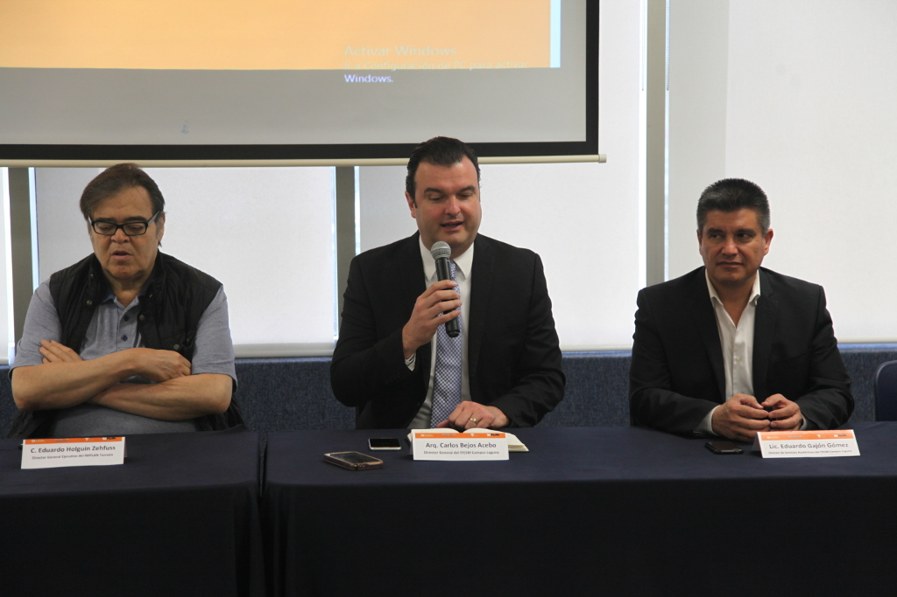
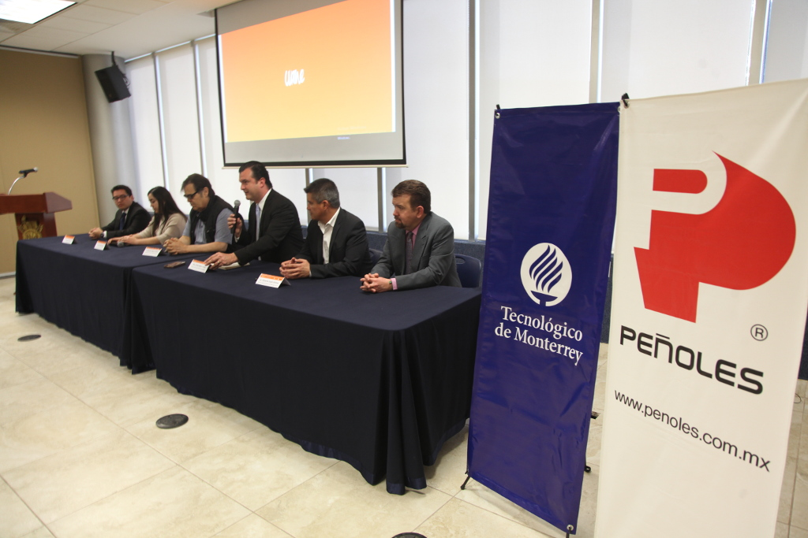

Gracias a la amplia respuesta que se obtuvo de los jóvenes en 2017, el Instituto Municipal de Planeación y Competitividad de Torreón y el Tecnológico de Monterrey han decidido realizar la segunda edición del encuentro Laguna Y2040 Youth Challenge, ampliando la participación de más universidades laguneras, el 2 y 3 de marzo de 2018.
Este encuentro “es un espacio para que los jóvenes discutan y analicen sobre la región que habitan; un lugar donde puedan conocer, proponer y trabajar ideas que mejoren las condiciones de La Laguna desde sus áreas de estudio; un espacio que permita que se apropien de su identidad y de su papel para hacer prosperar La Laguna”, dieron a conocer los organizadores.
En rueda de prensa, se contó con la presencia del director del IMPLAN, Eduardo Holguín; el director general del Tecnológico de Monterrey Campus Laguna, Carlos Bejos; el director de Apoyo a la Visión del Tecnológico de Monterrey, Eduardo Gajón; así como representantes de las universidades participantes.
Anunciaron que los jóvenes universitarios de La Laguna asistirán a ponencias con expertos líderes en los 6 ejes que se presentaron en el Plan Estratégico Torreón con Enfoque Metropolitano 2040 y trabajarán en mesas de discusión, con una metodología orientada por el IMPLAN y el Tecnológico de Monterrey.
El primer día, 2 de marzo, se contará con un panel de expertos especializados en cada tema del ámbito nacional y local; abierto al público en general donde se espera la asistencia de hasta mil personas.

Algunos de los ponentes confirmados son: Oscar Vera y Raymundo Von Bertrab en el eje de Desarrollo Económico; Gabriel Todd y Cecilio Secunza en Entorno Urbano; Susana Estens y Jorge Hori en Medio Ambiente; Mariana Orozco y Francisco Valdés Perezgazga en Movilidad y Transporte; David Ruelas, Luis Alfredo Medina e Indira Kempis en Buen Gobierno; y en el eje de Desarrollo Social Amorita Salas y Suhayla Bazbaz.
En las mesas de trabajo el 3 de marzo, se espera la participación de 600 jóvenes universitarios de La Laguna. Posteriormente el 21 de abril llevará a cabo “Mi acción de liderazgo” que es un compromiso individual de los asistentes donde cada uno invitará a 4 personas más a participar en una actividad que mejore las condiciones de la región.
Con esto se estima que los alcances serían 600 proyectos, 2,400 personas y 60,000 impactos, con lo que se buscan enriquecer la visión juvenil del Plan TRC2040. Ese mismo día, se llevará a cabo un gran evento cultural de cierre.
Las universidades confirmadas para este encuentro son: Instituto 18 de marzo, Tecnológico de Monterrey, Instituto Tecnológico de La Laguna, Tecnológico de Lerdo, Universidad Autónoma de Coahuila, Universidad Autónoma de La Laguna, Universidad Autónoma del Noreste, Universidad Iberoamericana, Universidad La Salle, Universidad TecMilenio, Universidad Politécnica de Gómez Palacio, Universidad Tecnológica de Torreón y Universidad Tecnológica de La Laguna.
